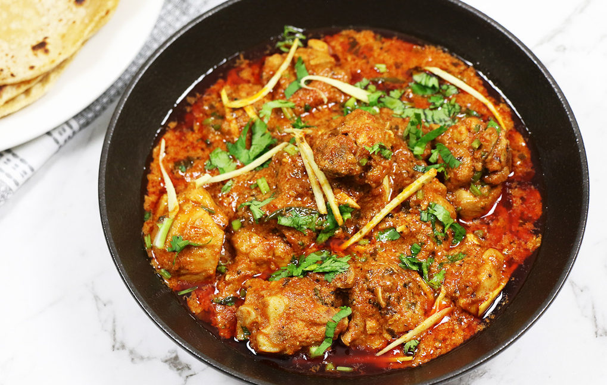

Chicken Karahi

Description
Chicken Karahi is a beloved dish in Pakistani and North Indian cuisine, known for its bold flavors and quick preparation. Cooked in a traditional wok-like pan called a 'karahi,' this dish features chicken cooked with a medley of tomatoes, onions, and aromatic spices. The simplicity of the ingredients allows the rich flavors to shine, making it a favorite for both everyday meals and festive occasions.
The magic of Chicken Karahi lies in its vibrant, slightly tangy gravy and the perfect balance of spices. Fresh coriander, ginger, and green chilies add a final touch of freshness and zest. Serve it with naan or steamed rice, and you'll have a dish that's both comforting and irresistibly flavorful.
Ingredients:
For The Chicken:
- 1 kg chicken, cut into pieces
- 1 cup plain yogurt
- 2 tbsp ginger-garlic paste
- 1 tsp cumin powder
- 1 tsp coriander powder
- 1 tsp garam masala
- 1/2 tsp turmeric powder
- 1 tsp red chili powder
- Salt to taste
For The Gravy:
- 2 large tomatoes, chopped
- 1 large onion, chopped
- 2 green chilies, chopped
- 1/2 cup oil
- Fresh coriander leaves
For Garnish:
- Fresh coriander
- Fresh ginger
Steps:
- Marinate the Chicken: Mix chicken with yogurt, ginger-garlic paste, cumin, coriander, garam masala, turmeric, red chili powder, and salt.
- Cook the Chicken: Heat oil in a wok, add chicken, and cook until browned.
- Add Tomatoes and Onions: Add chopped tomatoes, onions, and green chilies.
- Simmer: Cook on low heat until the chicken is tender.
- Garnish: Add fresh coriander and sliced ginger.
- Serve: Serve hot with naan or steamed rice.